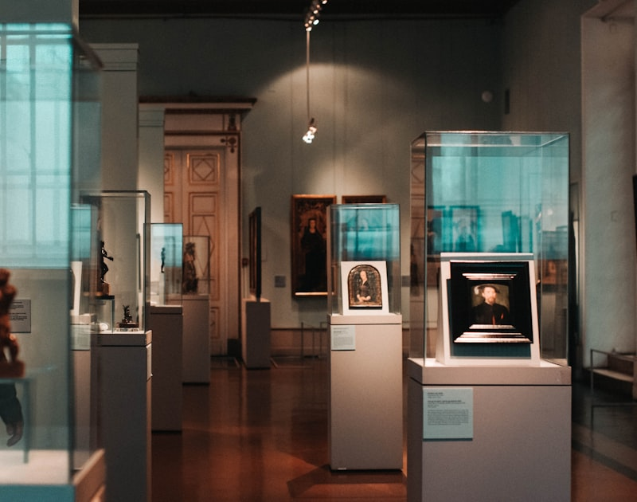
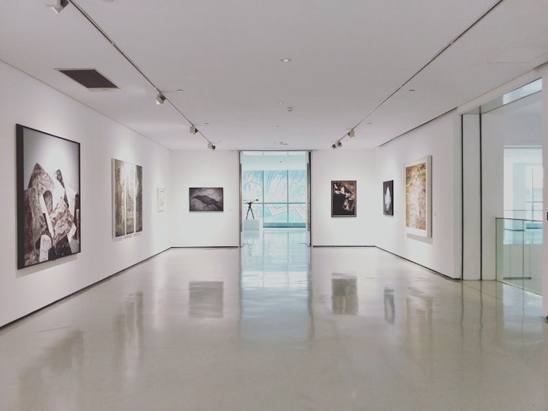
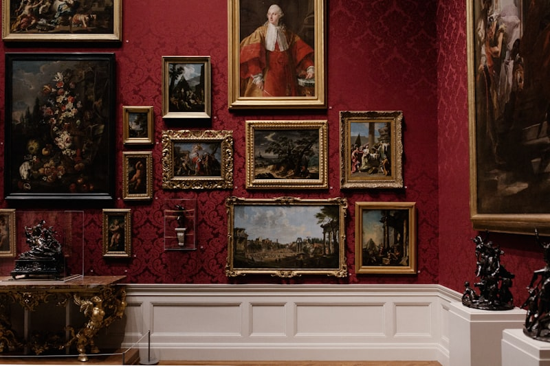
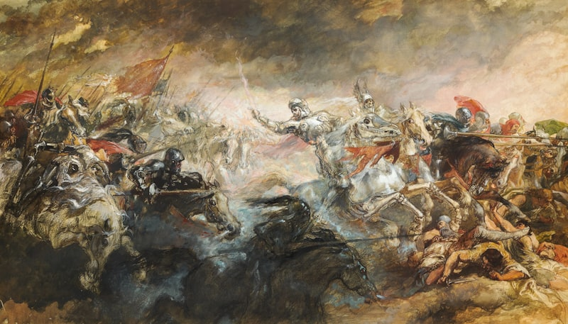
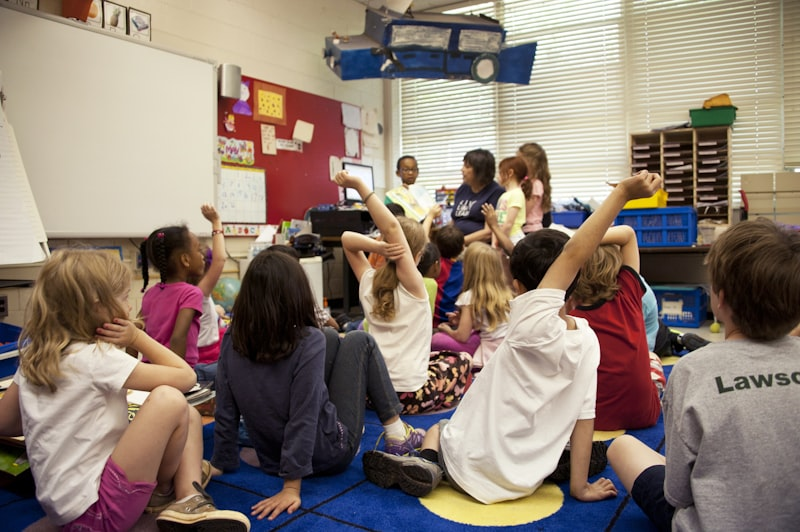
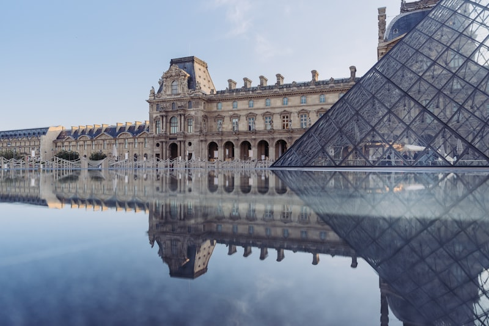
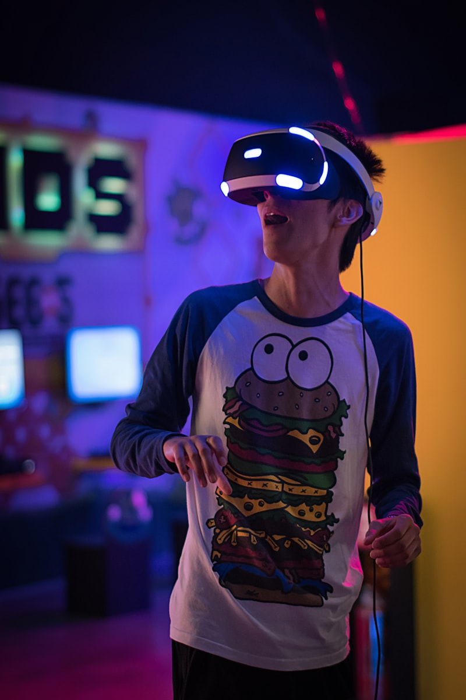

From princely cabinets of curiosity to immersive digital experiences — how the spaces where we encounter culture have evolved, and where they must go next.
The museum is a surprisingly modern invention. For most of human history, collections were private, sacred, or royal. The idea that culture belongs to everyone is barely 250 years old.
The word "museum" derives from the Greek mouseion — a temple dedicated to the Muses. The Musaeum of Alexandria (3rd century BC) combined a library, lecture halls, and botanical gardens, but it was a research institution, not a public gallery. For the next two millennia, collections were instruments of power: temple treasuries displayed the wealth of gods, royal collections demonstrated the reach of empires, and church reliquaries authenticated divine authority through material evidence.

Part library, part research institute, part temple — the Musaeum was the ancient world's greatest centre of learning. Scholars from across the Mediterranean gathered to study, debate, and catalogue knowledge. It was destroyed gradually over centuries, but its model — a place where knowledge is collected, preserved, and shared — endures.

Renaissance princes and scholars assembled Wunderkammern — rooms packed with natural specimens, antiquities, instruments, and exotica from the New World. Ole Worm's cabinet in Copenhagen and the Medici collections in Florence were encyclopaedic in ambition: they sought to contain the entire world in a single room. The museum as we know it grew from these private obsessions.

The Uffizi in Florence (1581), originally a government office building, became one of the first galleries open to visitors by request. The Louvre, the Hermitage, and the Prado began as royal collections displayed in palace wings. The transition from private collection to public institution took centuries — and was rarely voluntary.
The modern public museum was born from Enlightenment ideals: that knowledge should be accessible, that citizens had a right to encounter their cultural heritage, and that education could elevate society. The British Museum, founded in 1753 from Sir Hans Sloane's collection, was the first national museum open to all "studious and curious Persons" — free of charge. The Louvre opened to the public in 1793 during the French Revolution, explicitly reframing the king's collection as the people's patrimony.
The 19th century saw an explosion of museum building: the Victoria and Albert Museum (1852), the Metropolitan Museum of Art (1870), the Natural History Museum (1881). These were civic cathedrals — monumental buildings that proclaimed the values of their age: progress, classification, national identity, and the supremacy of Western civilisation. The architecture was as much a statement as the collection.

The 20th century transformed the museum twice. First, the "white cube" — the neutral, well-lit gallery space theorised by Brian O'Doherty in 1976 — became the dominant model for displaying art. The Museum of Modern Art (MoMA, 1929) and its many imitators stripped away ornament to let the artwork speak. The gallery became a controlled environment: white walls, even lighting, minimal context. Art was to be contemplated in silence, like prayer.
Then came the Bilbao Effect. Frank Gehry's Guggenheim Museum Bilbao (1997) demonstrated that a museum building could be a destination in itself — a piece of sculpture that revitalised an entire city. The era of "starchitecture" followed: Zaha Hadid, Daniel Libeskind, Renzo Piano, and Jean Nouvel competed to create ever-more-spectacular museum buildings. The question of what was inside became secondary to the question of what the building looked like.
The museum was invented to preserve the past. Its greatest challenge now is to remain relevant to the present — and indispensable to the future.
A $50 billion global sector grappling with relevance, access, decolonisation, and the fundamental question of what a museum is for in the age of Google Images.
Museum attendance was declining in many countries before the pandemic. Younger audiences — raised on TikTok, YouTube, and immersive entertainment — increasingly find traditional museums passive, slow, and disconnected from their lives. The average museum visitor is over 50, white, and college-educated. The question is existential: if the museum doesn't serve the whole community, who is it for?
The institutions that are thriving — teamLab, Meow Wolf, the Museum of Ice Cream — are not traditional museums at all. They are immersive, participatory, social-media-native experiences. The traditional museum must ask what it can learn from them without losing what makes it irreplaceable.
Many of the world's greatest museum collections were assembled through colonialism. The Benin Bronzes, the Parthenon Marbles, the Koh-i-Noor diamond — these are not just objects. They are evidence of extraction, and their continued display in Western institutions is increasingly contested. Germany's Humboldt Forum returned Benin Bronzes to Nigeria in 2022. The debate is accelerating.
Decolonisation goes beyond repatriation. It means rethinking whose stories are told, whose knowledge systems are valued, who curates, and what "universal" really means when applied to institutions built by and for European elites.

Despite free admission policies at many national museums, the audience remains stubbornly narrow. Socioeconomic background is the strongest predictor of museum attendance — stronger than geography, age, or education. Museums are concentrated in wealthy cities: London has 250+ museums; some countries have fewer than one per million people.
Physical accessibility, neurodiversity, and sensory needs remain afterthoughts in most museum design. The museum that claims to be "for everyone" but serves only the affluent and able-bodied is engaged in a contradiction it can no longer ignore.

Museums operate on some of the thinnest margins of any cultural institution. Government funding has declined in real terms across most Western countries over the past decade. The pandemic cost the global museum sector an estimated $50 billion in lost revenue. The blockbuster exhibition model — expensive to mount, dependent on tourism — is increasingly precarious.
The dependence on private philanthropy and corporate sponsorship raises its own questions: about whose values are represented, which exhibitions get funded, and whether naming rights distort institutional mission.

The pandemic forced museums online overnight — and revealed how far behind most were. Virtual tours were often clunky navigations of empty galleries. Digital collections were incomplete and poorly searchable. The Rijksmuseum and the Smithsonian led with high-resolution open-access programmes, but they were exceptions.
The deeper question: when every painting can be viewed in higher resolution on a phone than in a crowded gallery, what is the unique value of being physically present with the original object? Museums must articulate this — or risk becoming warehouses for things people can see better elsewhere.

The white cube was designed to make art sacred. It succeeded — and in doing so, made the museum feel like a church: respected, visited occasionally, and fundamentally disconnected from daily life.
Seven trajectories that could transform museums over the next decade — from AI-curated exhibitions to museums without collections.
Beyond the white cube — multi-sensory environments where visitors don't observe art but inhabit it.
Dissolving the boundary between museum and city — the collection that spills into streets, parks, and neighbourhoods.
Personalised exhibitions generated in real time — every visitor sees a different museum, shaped by their interests and history.
Institutions that share authority, return objects, and make space for knowledge systems beyond the Western canon.
Collections that grow, change, and respond — museums as living organisms rather than frozen archives.
Cultural institutions that lead the climate conversation — by decarbonising their own operations and curating the crisis.
Digital collections, AR overlays, and distributed experiences that extend the museum far beyond its building.



The visitor as co-creator, not passive consumer. Every exhibition should offer a way in for someone who has never been to a museum before — and a reason to return for someone who has.
The era of the single curatorial narrative is ending. Museums must make space for contested histories, community knowledge, and perspectives that challenge institutional orthodoxy.
Not a choice between physical and digital — but a seamless integration where digital extends, deepens, and democratises the physical encounter.
The museum's ground floor should be the neighbourhood's living room. Its programme should respond to local needs. Its collection should be accessible, not locked in storage.
Neurodiversity, sensory needs, physical access, and cultural safety must be embedded in design from the start — not retrofitted with a ramp and a quiet room.
When every image is online, the museum must offer something that cannot be reproduced: scale, materiality, social encounter, serendipity, and the irreplaceable experience of standing before an original object.
The museums that will matter are not the ones with the largest collections or the most spectacular buildings. They are the ones that understood that the museum's true medium is not the object — it is the encounter between the visitor and something that changes how they see the world.
Visitor flow analytics, dwell-time sensors, environmental monitoring, and real-time feedback capture how people actually experience the museum — revealing the gap between curatorial intent and visitor reality.
A digital twin aggregates data to identify patterns: which galleries create bottlenecks, which objects are overlooked, how lighting affects engagement, and which interpretive approaches work for different audiences.
The museum responds: adjusting lighting for conservation and mood, reconfiguring temporary exhibitions based on flow data, personalising digital guides, and informing collection strategy with evidence about what visitors actually care about.